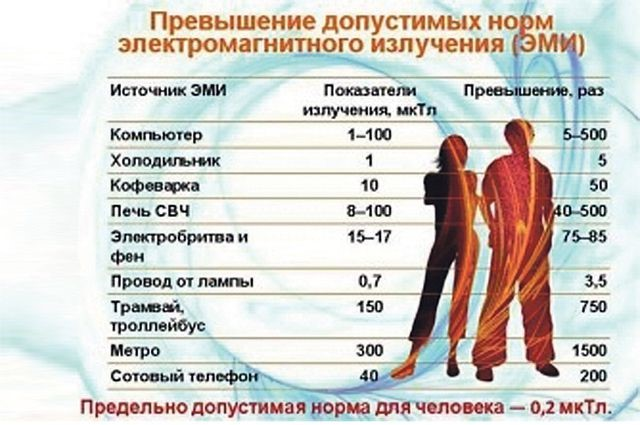

...люди не должны сомневаться в успехе медицинского ПРОМЫСЛА,
когда ТРИ ВОЛИ – ВОЛЯ СОЗДАТЕЛЯ,
ВОЛЯ ПРИРОДЫ и ВОЛЯ человека – совпадают!
Послание от 14.11.15, книга XII

По закону Природы
Развиваемые в Холдинге «НИИ здоровьесберегающие технологий» представления о человеке, как об открытом энерго–информационном кластере, позволили также предложить совершенно новое научное направление в области нанобиотехнологии, основанное на передаче регуляторного сигнала (информации) в живых клеточных системах посредством новой группы природных биорегуляторов на нано уровне. Было показано, что биорегуляторы или энерго–информационные системы (сигналы), существуют в виде наноагрегатов, в состав которых входят низкомолекулярные регуляторные белки, а также белки, моделирующие их биологическое воздействие, изменяющие информационные потоки в клетке человека.
Были разработаны фундаментальные основы связи организма человека с внешней (природной) средой. Суть этих основ заключается в следующих положениях:
- между пространственным строением молекул и их свойствами существует связь, проявляющаяся в левой или правой оптической активности;
- явление диссимметрии есть разница левых и правых форм молекул вещества или энергии;
- живые клетки обладают левой или правой оптической активностью и имеют вокруг себя энергетическое клеточное поле неэлектромагнитной природы, в основе которого также находится пространственное строение клетки (геометрия формы) и всех ее структурных элементов;
- суммирование полей клеток представляет собой биологическое поле всего организма;
- жизнь на планете является непосредственным продолжением космогеологических процессов и теснейшим образом связана с состоянием околоземного пространства, биосферой и подчинена явлению диссимметрии; биосфера обладает диссимметрией;
- явление диссимметрии на Земле проявляется в результате воздействия сил Космоса.
Что мешает здоровью?
Наше здоровье – это, в первую очередь, здоровая энергетика, складывающаяся из нескольких потоков энергии: идущего от земли, (отрицательный заряд), из Космоса (положительный заряд), и образующегося от работы клеток и органов организма. В результате складывается сугубо индивидуальная энергоинформационная структура, поддерживающая всю жизнедеятельность человека, защищающая его от отрицательных воздействий. Это своего рода аккумулятор, постоянно подпитывающий организм энергией. 50% необходимой для поддержания здоровья энергии человек получает из внешней среды, а 50% он должен вырабатывать сам в результате процессов тканевого дыхания клеток.
Ситуация такова, что в настоящее время к 40 годам человек в среднем имеет 2 –3 хронические болезни, а к 60 годам от 10 до 12 заболеваний. А по существу это и есть действие одного причинно–следственного механизма нарушение здоровья с различными его проявлениями.
Научный подход
Морфологический анализ жидких кристаллов любой биожидкости позволяет выявить уровень энтропии и обнаружить нарушение или изменение ориентировки кристаллической решётки на надмолекулярном уровне, что даёт информацию об изменениях во внутренней системе.
Жидкие кристаллы, например вода, а особенно, кровь (переносчики информационной энергии), очень чувствительны к воздействиям окружающей среды, что вызывает энергоинформационные изменения жидких кристаллов в зависимости от уровня воздействия торсионных полей, энергии Космического Пространства!
На исследования перераспределения информационных потоков (энергии) при приёме лекарственных препаратов природного и неприродного происхождения и оценку влияния их на иммунную систему человека, нас подтолкнуло мнение известного в Перу специалиста по традиционной перуанской медицине, доктора философских наук, ректора Национального Университета в Сан–Мартине Хорхе Гонсалеса (Dr. Jorge Gonzalez).
Здоровый рост
Нами совместно с учёными Перу (Институтом Высокогорных Исследований Перуанского Университета Кайэтано Эредия) были выбраны несколько высокогорных растений, несущих в себе способность гармонизации клетки человека и природы, и тем самым, останавливать процессы накопления повреждений (в клетке), обусловленных негативной внешней средой обитания!
В основу этого природного препарата заложен экстракт из коры многолетней лианы семейства мареновых Uncaria Tomentosa, которая стала известна учёным более 40 лет назад. Лечебные свойства этого растения изучают в медицинских центрах Перу, США, Австрии, Китая и др. В России клинические исследования свойств препарата из этой лианы были проведены в Российском онкологическом научном центре РАМН, НИИ фармакологии РАМН, НИИ хирургии им. А.В. Вишневского. Данные исследования позволили хорошо изучить состав активного вещества и подтвердили высокую терапевтическую эффективность препарата из этого растения при многих заболеваниях.
Экстракт данного растения возможно использовать при: ревматоидных артритах, артрозах, доброкачественных образованиях (миомы, мастопатии), при заболеваниях желудочно–кишечного трактах (хронический гастрит, язвенная болезнь желудка и 12 п.к., хронический колит), при снижение иммунитета (как профилактика и лечение у часто болеющих пациентов, с высоким риском возникновения вялотекущих бактериальных и вирусных инфекций), при хроническом пиелонефрите, цистите, простатите, при хронических бронхитах, бронхиальной астме, при хроническом остеомиелите и хроническом стрессе.
Вторым из большого списка перуанских природных лекарственных препаратов нами были выбрано растение, относящееся к семейству Cucurbitaceae. Это вьющееся годовое растение, широко распространённое в Перу, стебель которого может достигать 5 м в высоту. Плоды представляют собой продолговатые уплотнённые стручки, обычно загнутые у основания, длиной 10–20 см. Исследования на клеточном уровне показало, что это растение является профилактическим и терапевтическим средством, способствующим снижению общего холестерина за счёт регуляции метаболизма жиров. Благодаря липотропному действию растения стабилизируется содержание холестерина в крови, как за счет нормализации синтеза ЛПВП (хорошего холестерина), так и снижению в крови ЛПНП (плохого холестерина), который накапливается на стенках сосудов и может приводить к формированию атеросклеротической бляшки, уменьшающей просвет сосуда, затрудняющей прохождение крови и нарушающей питание органов и тканей.
Российский вклад
Результаты наших исследований показали, что лекарственные препараты природного происхождения имеют не только положительный эффект, ибо суммарная электрическая (жизненная) энергия повышается и достаточно значительно, но самое главное, эффект позитивного влияния на иммунную систему организма при применении этих препаратов держится достаточно длительно (больше недели) период времени!
Сравнивая реакцию организма пациента на вторжение лекарственных препаратов природного и «неприродного» происхождения, можно согласиться с мнением известного учёного из Перу о том, что при использовании лекарственных препаратов (без Бога) мы имеем опасность отрицательного эффекта, поэтому в качестве рекомендация по применению лекарств не только при самолечении, но по рекомендации даже профессионалов, с учётом возможного контрафакта, нужно помнить слова из известного кинофильма « думайте сами, решайте сами быть или не быть!
Хотим привести, только для того чтобы читатели этого популярного издания подумали о своём здоровье, результаты некоторых исследований которые получили в процессе длительного эксперимента, не ставя таких задач! Прежде всего получилось так, что нашему сотруднику, который принял на себя ответственность за чистоту эксперимента, по семейным обстоятельствам посетил кладбище! Посещение кладбища отразилось в резком снижении жизненной энергии (сумме электрически импульсов) на порядок и это состояние организма продержалось двое суток!
Л.И. Маслов
д.т.н., профессор, академик АТН РФ и РАЕН,
Директор холдинга «НИИ Здоровьесберегающие технологии»,
В.В. Бородулин, И.Ю. Карпова Холдинг «НИИ здоровьесберегающие технологии»,
А.Г. Пенкин ОАО «Специальные диагностические системы»